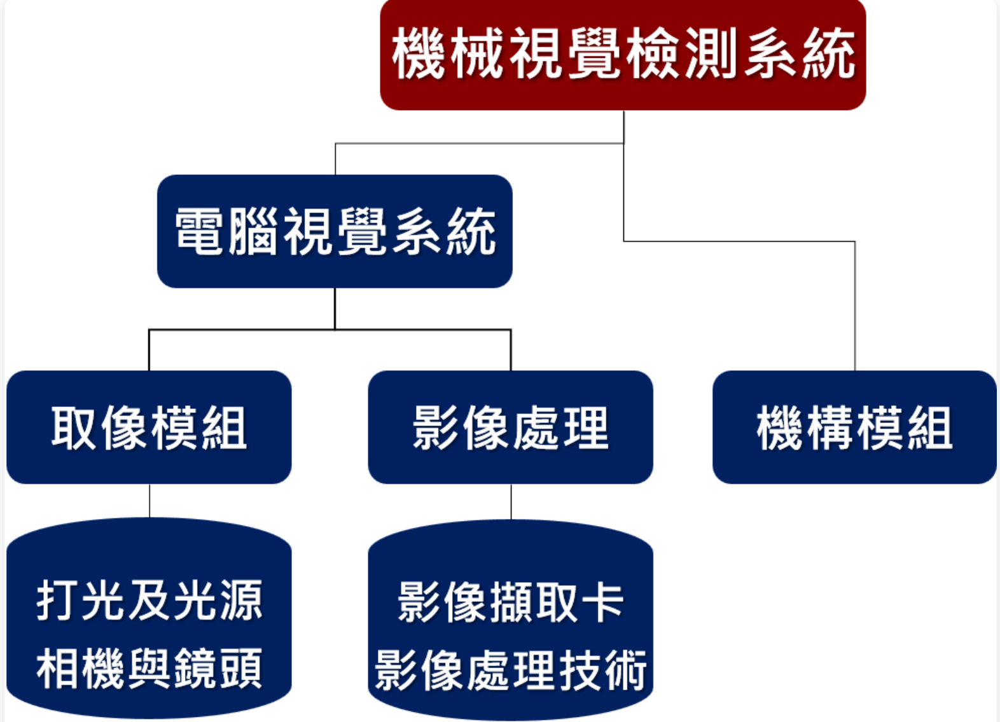

什麼是機器視覺檢測？

▲ 機器視覺檢測系統示意圖
AOI (Automated Optical Inspection) 自動化光學檢測是利用機器視覺技術進行產品品質檢測的先進技術。透過光學系統擷取產品影像，並運用影像處理與人工智慧演算法，自動判斷產品是否符合品質標準。
機器視覺檢測能夠取代傳統的人工目視檢查，大幅提高檢測效率與準確性。相較於人工檢測，機器視覺系統具有以下優勢：
- 24 小時不間斷運作，不受疲勞影響
- 檢測速度快，可達每秒數百件
- 檢測標準一致，減少人為誤判
- 可檢測微小缺陷，精度達微米等級
- 完整記錄檢測數據，便於追溯分析
機器視覺的相關領域
機器視覺是一門跨領域的整合技術，涵蓋多個專業領域的知識與應用：
光學 (Optics)
光源設計、鏡頭選擇、成像原理，確保獲得高品質的影像
影像處理 (Image Processing)
影像濾波、影像增強、影像分割，提升影像品質與特徵萃取
電腦視覺 (Computer Vision)
特徵提取、物體識別、場景理解，實現智能化的視覺分析
機器學習 (Machine Learning)
深度學習、分類演算法、缺陷預測，提升檢測的智能化程度
六大核心功能
機器視覺系統具備多種核心功能，可應用於不同的檢測需求：
📍 定位 (Location)
確定物件在空間中的位置與方向，提供精確的座標資訊
🔖 識別 (Identification)
讀取條碼、二維碼、字符等資訊，實現產品追溯與管理
🧠 辨識 (Recognition)
識別物件的形狀、顏色、紋理等特徵，進行分類與判別
🔎 瑕疵檢測 (Defect Detection)
檢測表面缺陷、異物、劃痕等品質問題
✅ 驗證 (Verification)
確認組裝是否正確、零件是否完整，確保產品品質
📐 量測 (Measurement)
精確測量尺寸、距離、角度等幾何參數
AOI 系統的關鍵技術
建構一套完整的 AOI 系統需要整合多項關鍵技術：
光學設計
照明系統與光源配置，確保影像品質
機台設計
機械結構與穩定性，提供精密的運動平台
運動控制
精密定位與移動控制，實現高速檢測
系統整合
軟硬體協同運作，確保系統穩定性
影像處理
影像增強與分析，提升檢測效果
特徵擷取
關鍵特徵識別，實現精準判斷
尺寸量測
精確度量與校正，確保測量精度
瑕疵檢測
缺陷判定演算法，提高檢測準確率